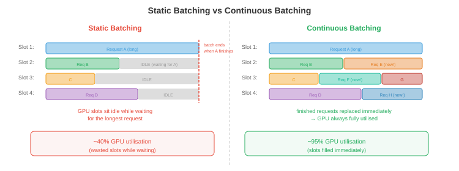
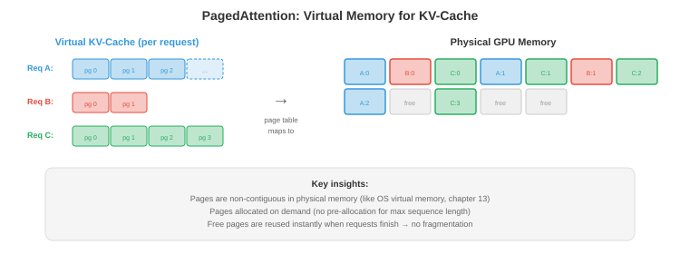
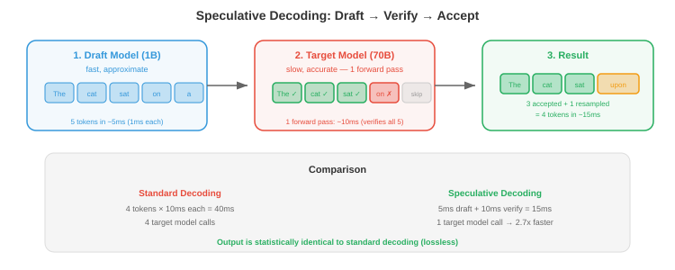

Maths, CS & AI Compendium · Chapter 17
Every Token Pays a Setup
To write one word, a language model reads every one of its weights out of memory. That read is a setup, paid again on every step, and almost everything in this chapter is a way to shrink it, share it or spread it. Shrinking it is quantisation, and quantisation is measurement. Sharing it is batching, and batching is lot sizing against a takt time.
The chapter has five source files: quantisation, efficient architectures, serving and batching, edge inference, and scaling and deployment. This sheet covers all five at the level of one server. Sheet 18 takes up the plant: capacity planning across many servers, redundancy and system design. Sheet 16 covers the hardware underneath, and this sheet uses only one fact from it: reading memory, not arithmetic, sets the pace of generating text.
The headline is §14. Continuous batching, the scheduling method every modern server uses, runs at exactly the minimum lot size that meets takt, the quantity a production planner computes as setup time divided by (takt time minus time per piece). Nobody sets it that way. Little’s law forces it, and the same algebra gives the time per output token as \(t_w/(1-\rho)\), the queueing cliff of Sheet 13 part 2 §06 with no randomness in it. The second result is §06: the best-known weight quantiser, GPTQ, is a support-settlement problem, and the source prints its update with the wrong matrix.
| Source says | Computed | Where |
|---|---|---|
| “2× again for INT8 vs FP16” on each halving, and “989 TFLOPS in FP8 vs 67 in FP32, a 15× difference” | The ladder gives 4× from FP32 to FP8. 989/67 = 14.8 mixes two kinds of rate, so the two statements cannot describe the same hardware. | §01 |
| MX formats: MXFP8 “~8” bits, MXINT8 “~8.5” | Same element bits, same shared exponent, so the same cost: 8.25 bits with a block of 32, 8.5 with a block of 16. | §02 |
| Outlier task prints that the outliers “waste 100% of the quantisation range” | The printed 99.6% is the share of channels that are normal. The normal channels use 5 of 255 levels, 1.6% of the range, and 72% of their values round to zero. | §04 |
| Per-channel scaling of activations “succeeds” | Scales along the summed dimension cannot be taken out of an integer matrix product. SmoothQuant exists because of this, and beats it: 0.38% against 0.79%. | §04 |
| GPTQ update \(W_{:,j+1:} \mathrel{-}= (\hat W_{:,j}-W_{:,j})H_{j,j+1:}/H_{jj}\) | The update needs the inverse Hessian. As printed it removes 13–16% of plain rounding’s error; the correct update removes 48–49%. | §06 |
| KV cache of a 70B model at 128K tokens in FP16: “330 GB” | 343.6 GB (320 GiB). The source’s own code prints 343.6. With 8 key-value heads it is 42.9 GB. | §09 |
| “~1.3 KB per token per layer, ~100 KB per token” for the 70B (file 03) | File 01’s own parameters give 32 KB per layer, 2.6 MB per token. With 8 key-value heads: 4 KB and 328 KB. | §09 |
| Figure: MHA/GQA/MQA cache for the 70B at 32K in FP16 is 40/5/0.6 GB | 85.9/10.7/1.3 GB. The figure’s numbers are the 1-byte values. | §10 |
| Sliding window of 128 on 512 tokens: “Reduction: 4.0x” | That compares two-way full attention with a one-way window. Like for like it is 2.29×. | §10 |
| Speculative decoding speedup ≈ \(k \times\) acceptance / cost ratio | \((1-\alpha^{k+1})/[(1-\alpha)(kc+1)]\). At \(\alpha = 0.5\), \(k = 5\): 1.31×, where the source’s form gives 1.67×. | §18 |
| A 30-minute conversation on a 3–5 W model “drains ~5%” of a phone battery | 10–16% of an assumed 15.4 Wh battery if it generates throughout. 5% needs the model idle about two thirds of the time. | §17 |
| FedAvg: \(W_{\text{new}} = \frac1K\sum_k W_k\) | Weight each device by its data. The weighted mean equals the central step to \(10^{-16}\); the plain mean is off by 0.058. | §17 |
| 100,000 GPUs “~$3 billion per year” | $7.0 billion at the source’s own $8 per GPU-hour. | §19 |
| Tensor parallelism: “an all-reduce aggregates” a column split, then \(Y = \text{concat}(Y_i)\) | A column split is concatenated (all-gather); a row split is summed (all-reduce). The quoted 0.1 ms and 3 ms per layer need messages of about 5,500 tokens, not one. | §19 |
The verdict column follows the series’ convention. Identity means the same formula or procedure, checked numerically. Same structure means the parts map one to one but the numbers are not shared. Breaks means the correspondence holds in form and fails in substance, and the section says where.
| What you already know | What this chapter calls it | Verdict |
|---|---|---|
| Least count; reading uncertainty \(\Delta/\sqrt{12}\) | Quantisation step; noise variance \(\Delta^2/12\) | Identity while the spread is at least half a step. See §03. |
| A dial gauge against significant figures | Integer formats against floating point | Identity, Sheet 13 part 1 §10. See §02. |
| Choosing a gauge range for each feature | Per-channel and per-token scales | Breaks on the dimension that gets summed. See §04. |
| Range against resolution: clip or lose divisions | Calibration by clipping | Identity, with a computable optimum. See §05. |
| Support settlement; static condensation | GPTQ’s error compensation | Identity. See §06. |
| Baseline against chain dimensioning | Compensated against independent rounding | Identity when all inputs agree. See §06. |
| RSS tolerance stack; a systematic drift | Rounding error through many layers | Identity in growth law. See §08. |
| A mixed-model lot, whose setup grows with variety | A mixture-of-experts model under batching | Same structure. See §11. |
| Lot time = setup + quantity × time per piece | Decode step = weight read + batch × per-sequence read | Identity in the algebra; the picture is a furnace load. See §13. |
| Minimum lot to meet takt, \(S/(T-p)\) | The batch continuous batching settles at | Identity, by Little’s law. The headline. See §14. |
| Lead time, cycle time, takt time | Time per output token, time per token served, demand | Corrects the bank: latency is lead time, not cycle time. See §14. |
| The utilisation cliff \(1/(1-\rho)\) | Time per output token \(t_w/(1-\rho)\) | Same shape, with no randomness. See §14. |
| One-piece flow beats batch-and-queue | Batch size 1 against continuous batching | Breaks. This setup cannot be reduced to zero. See §15. |
| Roughing and finishing on separate machines | Disaggregated prefill and decode | Same structure. See §16. |
| SMED; a single-user machine | Quantisation at the edge, where batch size is 1 | Same role. See §17. |
| Branch prediction, Sheet 13 part 1 §14 | Speculative decoding | Same structure. See §18. |
| — | Rejection sampling, the rule that makes it exact | No counterpart. Learn it cold. See §18. |
Inference means running a trained model to get answers from it, as opposed to training
it. A language model answers one token at a time; a token is a word or a piece of
one. The source opens with the number that sets the whole chapter: a model with 70 billion
weights, stored at 16 bits (2 bytes) each, needs 140 GB of memory. At 8 bits it needs 70 GB,
at 4 bits 35 GB ([Ch17 s01]). One data-centre accelerator holds about 80 GB
(reported), so the format decides whether the model fits on one device at all.
The second fact is the one this sheet is built on. Generating a token means pushing one vector through every layer, and every layer multiplies that vector by its weight matrix. Each weight is fetched from memory, used once, and not needed again until the next token. A memory system delivers a fixed number of bytes per second (its bandwidth), so the fastest possible rate is
The source’s own estimator in file 04 is exactly this bound. At 200 GB/s a 7B model
gives 57 tokens per second at 4 bits and 29 at 8 bits; at 50 GB/s a 3.8B model gives 26
([Ch17 s01]). Halve the bytes and the bound doubles, which is why the source can
say quantisation gives “nearly linear speedups”. The arithmetic units sit mostly
idle; Sheet 16 calls this being bandwidth-bound and draws it as a roofline.
Read the bound as a production engineer would. Before a step can produce anything, every weight must come out of memory. That cost is the same whether the step produces a token for one user or for a hundred, because the hundred can all use the weights while they are on chip. A cost paid once per run and independent of how many pieces the run makes is a setup, and Sheet 14 part 1 §04 showed how a setup is shared over a lot.
The rest of the chapter sorts by what each technique does to this setup. Quantisation shrinks it (§§02–09). Efficient architectures cut the work around it (§§10–12). Batching shares it between users (§§13–16). Edge devices have one user and cannot share it (§17). Speculative decoding spreads it over several tokens of one user (§18).
File 01 says each halving of precision doubles arithmetic throughput, FP32 to FP16 to INT8
to INT4. Two lines later it quotes 989 TFLOPS for FP8 against 67 for FP32, a 14.8×
ratio ([Ch17 s01]). The ladder gives 4× for two halvings. Both cannot be
rates of the same kind of operation on the same chip. The usual explanation, reported and
not derived here, is that 67 is the rate of the ordinary FP32 units and 989 is the dense
FP16 rate of the matrix units, with FP8 twice that. For this chapter it hardly matters:
decode is limited by bytes, not by FLOPs.
Sheet 13 part 1 §10 set up the bridge this section uses. A floating-point number has constant relative precision, a fixed number of significant figures at every magnitude. A fixed-point number, like a dial gauge, has constant absolute precision, the same smallest division everywhere. The source’s table of formats sorts into those two families, and the figures each one carries can be computed from its bit layout.

| Format | Exp / mant | Largest value | Figures | Behaves like |
|---|---|---|---|---|
| FP32 | 8 / 23 | 3.4×1038 | 7.22 | Significant figures |
| FP16 | 5 / 10 | 65,504 | 3.31 | Significant figures, short range |
| BF16 | 8 / 7 | 3.39×1038 | 2.41 | Fewer figures, FP32’s range |
| FP8 E4M3 | 4 / 3 | 448 | 1.20 | About one figure |
| FP8 E5M2 | 5 / 2 | 57,344 | 0.90 | Range over figures |
| INT8 with a scale | — | 127 × scale | 2.41 at full scale | A dial gauge with 255 divisions |
| INT4 with a scale | — | 7 × scale | 1.18 at full scale | A gauge with 15 divisions |
The integer rows need the qualifier “at full scale”. An INT8 tensor carries 2.41
figures for a value at the top of its range and 1.41 for a value a tenth as large
([Ch17 s02]), exactly as a dial gauge reading 0.08 mm on a 1 mm range has one
useful figure. To use integers at all, every tensor (or every row, or every block) gets a
scale, a float that converts counts back to values:
The scale \(s\) is the least count. The zero point \(z\) shifts the scale for one-sided data, as a gauge zeroed off the datum would. Symmetric quantisation sets \(z = 0\) and \(s = \max|x|/127\), which is ranging the gauge to the largest reading.
The source’s microscaling (MX) formats give a block of elements one shared 8-bit
exponent and each element its own few mantissa bits. That is a multi-channel recorder with
one range switch per bank: within a bank every channel reads on the same scale, and banks
can sit on different ranges. GGUF’s Q4_0, in the source’s llama.cpp list, is the
same idea with integers: 32 four-bit counts share one 16-bit scale (layout reported), so it
costs 4.5 bits per weight. That is why the source’s own table lists Llama 3.1 8B at
about 4.5 GB in “Q4”: \(8\times10^9 \times 4.5/8 = 4.5\) GB. The same
accounting puts the 70B at 39.4 GB, not 35 ([Ch17 s02]).
The shared exponent adds 8 bits per block. With a block of 32 that is 0.25 bits per
element, with 16 it is 0.5. The source lists MXFP6 at ~6.5, MXFP4 at ~4.5 and MXINT8 at
~8.5, which is the block-of-16 accounting, and MXFP8 at ~8. MXFP8 and MXINT8 both have 8
element bits and the same shared exponent, so they cost the same: 8.25 at a block of 32
(the standard’s block size, reported), 8.5 at 16 ([Ch17 s02]).
At the far end, BitNet restricts every weight to \(\{-1, 0, +1\}\). Three states carry
\(\log_2 3 = 1.585\) bits, so a 70B model needs 13.9 GB, close to the source’s
“~15 GB”. Multiplying by −1, 0 or +1 needs no multiplier: a ternary matrix
product is a sum of some inputs minus a sum of others, which the script confirms to
\(4\times10^{-15}\) ([Ch17 s07]). Whether such a model is as good as a 16-bit
one is a training question this sheet cannot compute.
Round a reading to the nearest division \(\Delta\) and the error lies somewhere in \([-\Delta/2, +\Delta/2]\). If the reading spans many divisions, nothing favours any part of that interval, so the error is uniform on it. A uniform distribution of width \(\Delta\) has
The rule for a measurement whose only knowledge is “somewhere within ±a”
is to treat it as rectangular and quote a standard uncertainty of \(a/\sqrt3\). With
\(a = \Delta/2\) that is \(\Delta/\sqrt{12} = 0.2887\,\Delta\), the square root of
\(\Delta^2/12\) exactly ([Ch17 s03]). Sheet 09 §03 met the same 1/12 in an
audio converter. It is one fact about rounding, and it holds wherever rounding happens.
The source’s first coding task measures it without saying so. It quantises a
1024×1024 matrix of weights drawn with standard deviation 0.02 to INT8. Ported to
numpy, the step is \(\Delta = 7.87\times10^{-4}\), the measured error variance is
\(5.157\times10^{-8}\) against \(\Delta^2/12 = 5.163\times10^{-8}\), the mean absolute
error is \(\Delta/4\) to 0.1%, and the largest error is \(\Delta/2\) ([Ch17 s03]).
The relative error it prints, 1.23%, is just \(\Delta/4\) divided by the mean size of a
weight.
The useful quantity is the signal-to-noise ratio, the signal’s variance over the error’s. With the uniform model it is \(12(\sigma/\Delta)^2\): set by how many divisions one standard deviation spans, and by nothing else. That is the whole of quantisation in one ratio, and the next section is about keeping \(\sigma/\Delta\) large.
The uniform model assumes the reading spans many divisions. Sample Gaussian readings and
compare ([Ch17 s03]):
- \(\sigma/\Delta \ge 0.5\): measured error variance within 1% of \(\Delta^2/12\), and the signal-to-noise ratio equals \(12(\sigma/\Delta)^2\) to two decimals.
- \(\sigma/\Delta = 0.25\): 95% of readings round to zero and the error variance is only 0.65 of \(\Delta^2/12\).
- \(\sigma/\Delta = 0.1\): every reading rounds to zero. The error is the signal, so the ratio is exactly 1, whatever the model says.
So the failure is not that the error grows past \(\Delta^2/12\). It is that the reading has gone below the least count, and the gauge reports zero.
A tensor gets one scale, or one per row, or one per block. The source calls this granularity: per-tensor, per-channel, per-group, per-token. The reason it matters is the reason a metrology lab does not measure a 0.1 mm runout with a gauge ranged for 25 mm. One large reading sets the range; every small reading on the same scale loses its figures.

The source’s second coding task makes this concrete. Activations for 32 tokens across
512 channels have standard deviation 0.1, except channel 0 (scaled 100×) and channel 1
(50×). One scale for the whole tensor gives a mean error of 0.0535; one scale per
channel gives 0.0006, 89 times smaller ([Ch17 s04]). The measurement model
explains the number. The shared step is \(\Delta = 0.218\), so a normal channel has
\(\sigma/\Delta = 0.46\): just inside the range where \(\Delta^2/12\) holds. Measured, its error
variance is 0.00385 against a predicted 0.00397, and its signal-to-noise ratio is 2.61
against \(12(0.46)^2 = 2.53\). The model predicted the damage. It is not noise. The normal
channels are being read on a gauge one division of which is twice their spread.
Its last line reads “Outlier channels waste 100% of the quantisation range for 0.4% of
channels”. The 100% (99.6% before rounding) is \(510/512\), the share of channels that
are not outliers. What it means to say is measured directly: the normal channels
use 5 of the 255 levels, \(-2\) to \(+2\), which is 1.6% of the range, and 72% of their
values round to zero ([Ch17 s04]). The conclusion survives. The number printed
under it measures something else.
So per-channel scales look like the answer. For weights they are: each output channel of a weight matrix gets its own scale, as Fig. 17.2 shows. For activations, which is what the task scales per channel, there is a catch the source does not mention, and it is the whole reason the next method exists.
A layer computes \(y_{ij} = \sum_k x_{ik} w_{kj}\): it adds up products over the channel index \(k\). The point of integer arithmetic is to do that sum in integers and convert once at the end. Write \(x_{ik} = a_i\,q_{ik}\) with one scale per token (row) and \(w_{kj} = b_j\,r_{kj}\) with one scale per output column:
Both scales come outside the sum, and the script confirms the integer product then
rescaled matches to \(5\times10^{-15}\). Now give the activations one scale per
channel, \(x_{ik} = c_k\,q_{ik}\). The scale sits inside the sum,
\(\sum_k c_k\,q_{ik} r_{kj}\), and there is no single factor per output that recovers it:
the factor each output would need varies with a spread 22 times its mean
([Ch17 s04]). Readings from gauges on different ranges must each be converted
before they can be added, and converting each one is the multiplication integer arithmetic
was meant to remove.
Per-channel scales are free on the dimensions that are not summed (tokens, output channels) and cost a multiply per term on the one that is.
The source gives SmoothQuant one line. Divide activation channel \(k\) by \(s_k\) and multiply
row \(k\) of the weights by the same \(s_k\). The product is unchanged, because
\(X\,\mathrm{diag}(s)^{-1}\,\mathrm{diag}(s)\,W = XW\), to \(2\times10^{-15}\). The outlier
channel arrives already shrunk, and the extra size lands in one row of the weights, where
a per-output-column weight scale absorbs it. With \(s_k = \sqrt{\max|x_k| / \max|w_k|}\) on
a 16×64 example with one channel 60× the rest, the relative output error at
8 bits is ([Ch17 s04]):
- one scale for all activations: 4.20%;
- one scale per token: 2.32%, because every token contains the outlier channel;
- one scale per activation channel, not runnable in an integer product: 0.79%;
- SmoothQuant, then per token and per output column: 0.38%.
Channel 0 runs 100 times larger than the other 31. With INT8 and one scale for the whole tensor, what share of the other channels’ readings round to zero?
normal channels
to zero
measured
predicted
measured
predicted
error
integer product?
Post-training quantisation (PTQ) quantises a finished model without retraining. A calibration set of a few hundred sample inputs is run through it to see how large each tensor’s values get, and the scales are chosen from that. The source lists four rules: min-max (range to the largest value seen), a percentile such as the 99.99th, the clip that minimises mean squared error, and a rule that matches distributions (KL divergence).
Range a gauge too wide and you waste divisions; too narrow and readings go off scale. A
quantiser has the same two errors. Inside the range the error is \(\Delta^2/12\), which
grows with the range; outside it, values are clipped to the end level and the error is
whatever sticks out. The total has a minimum, and for Gaussian data it can be computed
([Ch17 s05]):
- 4 bits: clip at \(2.47\sigma\). That clips 1.34% of values, and gives 3.17 times less error than ranging to the largest of a million samples, which sits at \(5.0\sigma\).
- 8 bits: clip at \(3.92\sigma\), for 1.41 times less error than min-max.
The fewer divisions you have, the more it pays to let the rare reading go off scale. That is why min-max is fine at 8 bits and poor at 4, and why the source finds PTQ “works well for INT8” and “drops significantly” at INT4.
A gauge is ranged for a part whose size you know. A model is ranged on a few hundred inputs and then serves millions it has not seen. Weights are fixed, so their range is known exactly. Activations change with every input, so a static scale is a forecast; the source’s dynamic quantisation measures the range afresh for each input, at the cost of a pass over the data first.
Quantisation-aware training (QAT) rounds the weights during training so the model learns around the rounding. Rounding is a staircase with zero slope almost everywhere, which would stop gradient descent dead, so the backward pass pretends the staircase is the line \(y = x\): the straight-through estimator. It is not the derivative of anything, and that it works is an empirical result (reported). The source’s cost argument is a setup-and-run argument: QAT is a large one-time cost, worth it when the quantised model will be run a very large number of times.
Rounding each weight to its nearest level (“round to nearest”, RTN) treats the weights as independent. They are not. A layer’s output is \(Xw\) for a row of weights \(w\) and a matrix \(X\) of calibration inputs, so a change \(\delta\) in the weights changes the output by \(X\delta\), and the squared output error is
\(H\) is symmetric and positive semi-definite, and \(E\) is a quadratic form in \(\delta\). You have met that object as \(\tfrac12 u^{\mathsf T}Ku\): \(H\) is a stiffness matrix and \(E\) is twice a strain energy. When two inputs are correlated, the off-diagonal term couples their weights, as a member couples two joints.
GPTQ quantises one column of weights at a time. Rounding weight \(j\) prescribes its error, \(\delta_j = q_j - w_j\). The weights not yet quantised are still free, so GPTQ moves them to whatever minimises \(E\) given that prescribed value. Minimising a quadratic energy with one displacement prescribed is a problem you have solved by hand:
A support of an indeterminate structure settles by \(\delta_j\); the free joints displace
by \(-K_{rr}^{-1}K_{rj}\,\delta_j\), the static response that minimises strain energy with that
displacement held. The first form above is exactly that, with \(H\) for \(K\). It is the
same condensation Sheet 10 §09 met as Guyan reduction. The second form, with the
inverse matrix, is the same vector written through a Schur-complement identity; the script
confirms the two agree to \(5\times10^{-12}\) ([Ch17 s06]). The inverse form
is the one GPTQ uses, because it can be updated cheaply as columns are fixed one after
another.
On a layer with 64 correlated inputs and 48 outputs, the output error relative to the
output is ([Ch17 s06]): 3-bit, RTN 0.0602 against compensated 0.0309; 4-bit,
0.0112 against 0.0059. Letting the free weights settle removes 48–49% of the error.
The source writes the update as \(W_{:,j+1:} \mathrel{-}= (\hat W_{:,j}-W_{:,j})\,H_{j,j+1:}/H_{jj}\): the coupling row of \(H\) itself, divided by the stiffness of the settled support. Check it on two weights, \(H = \begin{bmatrix}a&b\\b&c\end{bmatrix}\). Minimising \(a\delta_1^2 + 2b\delta_1\delta_2 + c\delta_2^2\) over \(\delta_2\) gives \(\delta_2 = -b\,\delta_1/c\), divided by the free joint’s stiffness. The printed rule gives \(-b\,\delta_1/a\). The sign is right and the denominator belongs to the wrong joint; with more weights it also ignores how the free weights couple to each other.
Run as printed on the same layer, it removes 13% of RTN’s error at 3 bits and 16% at
4, against 49% and 48% for the correct update ([Ch17 s06]). It helps a little,
because it pushes the error in the right direction, and it is not GPTQ.
Take the extreme case where every input carries the same signal, so the output is just the
sum of the weights and \(H = \mathbf{1}\mathbf{1}^{\mathsf T}\). Rounding 64 weights
independently to a step of 2/7 leaves the sum wrong by 1.005, the chain-dimensioning
result where every rounding stacks. With compensation, each rounding error is absorbed by
the weights still free, and the total ends within half a step: 0.138 against a bound of
0.143 ([Ch17 s06]). That is baseline dimensioning, every feature located from
the datum so errors cannot accumulate, and the same point Sheet 04 §05 made about
tolerance stacks.
A structure’s stiffness comes from its geometry and is known. \(H\) is assembled from a calibration sample and is only as good as that sample. When an input is always zero, or two inputs always move together, \(H\) is singular: the structure has a mechanism. GPTQ adds a small number to the diagonal before inverting (reported), which is grounding every joint with a weak spring so the stiffness matrix can be inverted. And the energy being minimised is the error at this layer’s output on the sample, not the error of the whole model.
Since decode is limited by reading weights (§01), the source’s favourite methods quantise only the weights, to 4 bits or fewer, and keep activations in 16-bit floats. The weights are expanded back to floats inside the arithmetic unit, so memory and bandwidth shrink while the arithmetic stays as it was. Each method attacks the same enemy, a few large values that set the range for everything else, in a different way.
| Method | What it does | In gauge terms |
|---|---|---|
| GPTQ | Rounds column by column and lets the rest settle | Baseline dimensioning (§06) |
| AWQ | Scales up the 1–3% of weight channels that meet large activations, scales the activations down | SmoothQuant’s trick (§04) aimed at the important channels |
| GGUF k-quants | Spends more bits on blocks that matter more | Finer gauges on critical dimensions |
| QuIP | Rotates the weight matrix by a random orthogonal matrix first | Mohr’s circle: same tensor, different axes |
| SpQR | Keeps the 0.1–1% worst outliers in 16 bits, stored sparsely | Measure a few critical features on the CMM, the rest by gauge |
| HQQ | Solves for scales with no calibration data | Range from the drawing, not from samples |
| AQLM | Writes each group of 8 weights as a sum of entries from two codebooks | Sheet 10 §06’s residual quantisation, with codebooks fitted jointly |
Rotating the axes cannot change a stress tensor; it only changes how the tensor is shared among components. A uniaxial stress of 100 MPa, read on axes at 45°, shows 50 normal on each and 50 shear. Principal axes concentrate a tensor; QuIP wants the opposite, axes on which no single entry stands out. Multiply the weight matrix on both sides by random orthogonal matrices, quantise, and rotate back. The product is unchanged, because \(Wx = (U^{\mathsf T}U)\,W(Q^{\mathsf T}Q)\,x\).
The source’s own example is “one weight is 100 and the rest are ~1”. On a
256×256 matrix of that kind, the largest entry is 93 times the typical one, and INT4
with one scale loses 93% of the matrix. After a random rotation the largest entry is 4.7
times the typical one, and the error is 19% ([Ch17 s07]).
A stress tensor does not care which axes you read it on. A quantised matrix stored on rotated axes needs its inputs rotated to match on every use. QuIP makes that affordable with structured orthogonal matrices that cost far less than a full multiply (reported). It is extra work bought to make rounding cheaper.
AQLM’s arithmetic is easy to check: two codebooks of 256 entries are two 8-bit indices
per group of 8 weights, so 2 bits per weight before the codebooks themselves
([Ch17 s07]). FP8 training uses E4M3 for the forward pass and E5M2 for
gradients: more figures where values are well behaved, more range where they span many
decades. The “loss scaling” it needs multiplies the gradients by a large factor
before they are stored and divides afterwards, which is changing an amplifier’s gain so
a small signal sits inside the converter’s range.
A model has dozens of layers, and every layer rounds. The source mentions error accumulation once, for the KV cache. It deserves a law, and you already own it. Modern language models pass a running total, the residual stream, from block to block, and each block adds its contribution to it. That is a stack of parts, and each rounding is a part’s deviation.
Sheet 04 §05 derived root-sum-square tolerance stacking: independent zero-mean
deviations add in variance, so the stack grows as \(\sqrt{n}\); a common drift, such as tool
wear on every part in a shift, adds directly, so it grows as \(n\). Round-to-nearest gives
zero-mean errors; truncation (always rounding down) gives a bias of \(-\Delta/2\) every time.
Simulated on a residual stream of 256 values, rounded to 0.01 after every block
([Ch17 s08]):
- rounding: RMS error 0.0058, 0.0119, 0.0270 at 4, 16 and 64 blocks; each fourfold increase in depth multiplies it by 2.06 and 2.26, against RSS’s 2;
- truncating: 0.0210, 0.0828, 0.3548; factors 3.95 and 4.28, against linear stacking’s 4.
A stacked part passes a deviation on unchanged. A layer multiplies it by its own gain, so an early error is amplified by every later layer, and the rounding factors come out a little above 2 for that reason. Errors at a layer with large gain matter more than the same rounding elsewhere, which is the source’s sensitivity analysis under another name: quantise one layer at a time, measure the damage, and give more bits where it is largest. Tolerance allocation does exactly that with sensitivity coefficients \(\partial y/\partial x_i\), tightening the tolerance where the coefficient is large.
Attention lets each new token look back at every earlier one. To do that it needs, for every earlier token and every layer, a key vector and a value vector. Recomputing them each step would repeat all the earlier work, so they are stored: the KV cache. It grows by one token’s worth per step, and it belongs to one request.
The source writes \(n_{\text{heads}}\) where this writes \(n_{\text{kv heads}}\). The two are the same in plain multi-head attention and differ by 8× in the grouped-query attention its next file says most modern models use (§10). The distinction is where the numbers go wrong.
For a 70B model with 80 layers, 64 heads of 128 dimensions, 131,072 tokens in FP16, the
prose says 330 GB. The product is \(343{,}597{,}383{,}680\) bytes: 343.6 GB, or exactly
320 GiB ([Ch17 s09]). The coding task at the end of the same file prints
343.6. Neither binary nor decimal units give 330.
The 70B model the source has in mind uses 8 key-value heads, not 64 (reported for
Llama-2-70B), so its real cache at that length is 42.9 GB. The same slip runs through the
chapter. File 03 sizes a token of this model’s cache at “~1.3 KB per layer,
~100 KB total”; file 01’s parameters give 32 KB per layer and 2.6 MB per token,
and with 8 key-value heads it is 4 KB and 328 KB. File 05’s 2,000-token shared
prompt “saves ~200 MB”; at 328 KB a token it is 655 MB, and at file 01’s
figures 5.2 GB ([Ch17 s09]).
None of this changes a conclusion that is a ratio, such as how much paging saves (§16). It changes every conclusion that is a number of gigabytes.
Each active request holds its own cache in memory, the cache grows one token at a time, and it is thrown away when the request finishes. That is work-in-progress inventory, held in the stores, one traveller per job. Memory is the stores, and when it fills, no more jobs can be released to the floor. §14 shows this is usually what limits a server, and Little’s law says how much of it you will hold.
KV-cache quantisation stores keys and values in 8 or 4 bits. The source calls it
“multiplicatively beneficial”, and §14 makes that exact: it halves the time
each sequence costs per step and doubles how many sequences fit, and on the example
server those two together double the capacity, from 2,500 to 5,000 tokens per second
([Ch17 s14]).
File 02 turns from cheaper operations to fewer of them. Most of it is about attention, whose cost grows with the square of the sequence length \(n\) because every token looks at every earlier one.
- StreamingLLM keeps the first few tokens permanently (the “attention sinks”, which take a large share of attention whatever they say) plus a rolling window of the most recent ones. The cache stops growing. What falls out of the window is gone.
- Sliding-window attention lets each token see only the last \(w\). After \(L\) layers information can travel about \(L \times w\) tokens, the way a disturbance crosses a lattice one neighbour per step.
- Linear attention regroups a product. Softmax attention computes \((QK^{\mathsf T})V\), an \(n\times n\) matrix first. Replace the softmax by a feature map \(\phi\) and the product can be taken as \(\phi(Q)\,(\phi(K)^{\mathsf T}V)\), a small \(d\times d\) matrix first: cost \(nd^2\) instead of \(n^2 d\). Matrix multiplication is associative, so this is exact for the new model. It is not the same model, because the softmax cannot be regrouped.
- State-space models such as Mamba are Sheet 07 §07’s discrete state-space systems, and the cache is replaced by a fixed-size state.
- Flash attention computes ordinary attention exactly, in tiles that stay in fast on-chip memory; Sheet 16 is where it belongs. Ring attention spreads one long sequence over several devices.
The coding task prints “Reduction: 4.0x” for a window of 128 on 512 tokens, as
\(n^2/(nw)\). But its full-attention function lets every token see every other, including
later ones, while its window looks only backwards. A language model only ever looks
backwards, so the fair baseline is the triangle: 131,328 scores against the window’s
57,408, a reduction of 2.29× ([Ch17 s10]). For long sequences the
ratio tends to \(n/2w\), half the printed figure.
The cache itself shrinks if heads share keys and values. Multi-query attention gives
all heads one key-value set; grouped-query attention gives each group of heads one. At
32K tokens with 32 heads of 128 dimensions, the source’s task gives 537 MB per layer for
separate sets, 134 MB with 8 groups and 16.8 MB with one: 4× and 32× smaller
([Ch17 s10]). Multi-head latent attention stores a compressed vector per
token and rebuilds keys and values from it, trading a little arithmetic for a lot of memory,
which is the right trade when memory is the constraint (its 93.3% reduction is reported).

[Ch17 s10]). Figure from the compendium.
A mixture-of-experts (MoE) model replaces one large block with several smaller
“experts” and sends each token to two of them. The source’s example has 8
experts, 46.7B weights in all and 12.9B used per token (figures reported), and calls it
“70B-class quality with 13B-class inference cost”. From those two numbers each
expert holds 5.63B weights and 1.63B are shared by every token ([Ch17 s11]).
The 13B-class cost is true for one token. But §01 said the cost that matters is the weight read per step, and a step serves a whole batch. Each token in the batch picks its own two experts, and the step must read every expert that any token picked.
A lot that mixes product variants needs the tooling for every variant present. One variant,
one setup; five variants, five. With uniform routing a token misses a given expert with
probability 6/8, so a batch of \(b\) tokens touches on average \(8\,(1-(3/4)^b)\) experts. The
formula matches simulation within 0.01, and the weight read per step follows
([Ch17 s11]):
- batch 1: 2 experts, 12.9B read, 28% of what a dense 46.7B model reads;
- batch 4: 5.47 experts, 32.4B, 69%;
- batch 8: 7.20 experts, 42.2B, 90%;
- batch 16: 7.92 experts, 46.2B, 99%.
Routing in real models is not uniform (reported), so the curve is an estimate of shape. The conclusion holds: at the batch sizes a server runs (§14), an MoE’s saving in weight reads is nearly gone, and what remains is the saving in arithmetic, 12.9B rather than 46.7B multiply-adds per token. The model still needs memory for all 46.7B. The source’s expert offloading and expert caching keep the rarely used experts further down the memory hierarchy, which is Sheet 13 part 1 §15’s material staging.
Distillation trains a small “student” to reproduce a large “teacher”. The student learns from the teacher’s full probability over the answers, not just the right answer, and the source says this carries more information.
A go/no-go check tells you pass or fail. A measured dimension tells you how far inside the band, which is why a variables sampling plan reaches the same assurance as an attributes plan with fewer samples. A label says “cat”. A teacher’s output says “cat 0.80, fox 0.15, dog 0.05”, which also says which wrong answers are nearly right. The temperature \(T\) in the source’s loss flattens those probabilities so the small ones carry weight. The bridge is in kind, not in a formula: no sample-size equation carries across.
Pruning removes weights. Removing scattered single weights saves memory but not time, because the hardware multiplies dense blocks; removing whole heads, neurons or layers leaves a smaller dense model. The one scattered pattern hardware does accelerate is 2:4, two zeros in every four weights, for about 2× (reported). Neural architecture search automates design against a target such as “under 5 ms on this phone”.
File 02’s third task ranks 8 attention heads by size and zeroes the smallest. Its heads
are random numbers, so their sizes all lie between 44.6 and 46.0 and the ranking means
nothing. Keeping 6, 4 or 2 heads gives errors of 0.495, 0.702 and 0.862, which are
\(\sqrt{2/8}\), \(\sqrt{4/8}\) and \(\sqrt{6/8}\) to within 0.006 ([Ch17 s12]): the
share removed, and nothing about importance. Its reshape also does not lay the
heads side by side per token, which would need a transpose first. That does not change the
printed error, which ignores order, but the comment calling it a concatenation is wrong.
Pruning by importance needs heads whose importance differs.
A request has two phases. Prefill reads the whole prompt in one pass: every prompt token is known, so they all go through together as one large matrix product, and the arithmetic units are the limit. Its result is the first output token and the request’s KV cache; the delay is the time to first token (TTFT). Decode then produces one token per step, each step reading all the weights (§01) and the request’s cache; the interval is the time per output token (TPOT). The source’s users tolerate a TTFT of a second or more and want a TPOT of 30–100 ms (reported).
A server serves many requests at once, so one decode step advances a batch of \(b\) sequences by one token each. Its duration is two terms:
The weights are read once and shared by the whole batch; each sequence’s cache is read for
that sequence alone. Put numbers to it for the server used through the rest of this sheet.
A 70B model at 4.5 bits per weight is 39.4 GB, call it 40. At a memory bandwidth of 2 TB/s
(a round figure; current data-centre parts are reported at 2–3.35 TB/s), reading it
takes \(t_w = 20\) ms. A sequence with 1,250 tokens of context at 328 KB per token holds
410 MB of cache, call it 0.4 GB, which takes \(t_{kv} = 0.2\) ms ([Ch17 s13]).
The device holds 80 GB.
Lot time = setup + quantity × time per piece is \(t_w + b\,t_{kv}\), term for term. The physical picture is a heat-treatment furnace rather than a press. A press handles pieces one after another; a furnace load is treated together, its cycle is mostly fixed, and each extra part adds a little. A decode step is a furnace load: all \(b\) tokens come out at the same moment, so every sequence in the batch waits the whole step.
Prefill is the opposite kind of operation. A 2,000-token prompt is 2,000 pieces through one weight read, so the setup is spread thin and the arithmetic per piece is what costs. One operation is setup-dominated and one is work-dominated, and §16 separates them onto different machines.
\(t_{kv}\) is not a constant: a conversation’s cache grows one token per step, so each sequence costs more the longer it runs, and this sheet uses an average. At large batches the arithmetic catches up with the memory traffic, and past that point (Sheet 16’s roofline ridge) each extra sequence costs arithmetic time as well. And prefill work mixed into a decode step lengthens that step for everyone in it. The two-term model is the first approximation every serving system starts from, not the whole story.
Batching to takt: continuous batching finds the minimum lot by itself
src 03. serving and batching ↗Three quantities from the shop floor, defined carefully, because the bridge bank for this sheet paired them wrongly:
- Takt time \(T\)
- Available time divided by demand. For a demand of \(\Lambda\) tokens per second, \(T = 1/\Lambda\). It belongs to the customer, not the machine.
- Cycle time
- The interval between finished pieces. A step makes \(b\) tokens, so it is \(t_{\text{step}}/b\).
- Lead time
- How long one piece spends being made. Each of a request’s tokens takes one whole step: that is the TPOT, \(t_{\text{step}}\).
Throughput is one over cycle time: \(X(b) = b/(t_w + b\,t_{kv})\). For the example server,
\(X(1) = 49.5\) tokens per second and the ceiling, as \(b\) grows, is \(1/t_{kv} = 5{,}000\).
A batch of one uses 1.0% of what the machine can do ([Ch17 s14]). To keep up
with demand, the cycle time must not exceed takt:
That is the planner’s minimum lot size: setup time divided by what takt leaves after the per-piece time. Nothing about it is specific to computers. Now look at how a server actually chooses \(b\).
Continuous batching, the method the source recommends and every modern server uses, works step by step: finished sequences leave the batch at the end of every step and waiting requests join at the start of the next. Nobody sets a batch size. Whoever is in the system is in the batch. Apply Little’s law (Sheet 13 part 2 §06): the number in the system equals the arrival rate times the time each spends there. Requests of \(L\) tokens arriving at \(\Lambda/L\) per second each spend \(L\) steps, so
The two expressions are the same number. Continuous batching settles at exactly
\(b_{\min}\): the smallest lot that keeps up, with no planner choosing it. Little’s law
forces it, because a larger batch would finish requests faster than they arrive and shrink,
and a smaller one would fall behind and grow. Checked at three demands
([Ch17 s14]):
- 1,000 tokens/s: takt 1.000 ms, lot 25.0, TPOT 25.00 ms;
- 2,000 tokens/s: takt 0.500 ms, lot 66.7, TPOT 33.33 ms;
- 3,000 tokens/s: takt 0.333 ms, lot 150.0, TPOT 50.00 ms.
A simulation with random (Poisson) arrivals and 300-token requests lands on them: a mean batch of 25.1 and TPOT of 25.19 ms at 1,000; 66.8 and 33.53 ms at 2,000, serving 995 and 1,991 tokens/s. The small excess is arrival randomness, under 1%.
The same algebra gives the lead time. Write \(\rho = \Lambda\,t_{kv}\), the share of the ceiling that demand uses. Then
Sheet 13 part 2 §06 showed an M/M/1 queue’s time in system as \(S/(1-\rho)\), and Sheet 14 part 1 §13 found a steeper version in a hash table. This is a third, and it needs no randomness at all. Every extra sequence lengthens the step, which keeps every sequence in the batch longer, which makes the batch larger: a feedback loop whose fixed point is \(t_w/(1-\rho)\). At \(\rho = 0.2\), TPOT is 25 ms; at 0.6, 50 ms; at 0.8, 100 ms. Same curve, same lesson: the last points of utilisation cost the most.
The bank for this sheet paired “latency versus throughput” with “cycle time
versus takt time”. Cycle time and takt are both rates of output, one the machine’s
and one the customer’s; neither is a latency. Latency is lead time, as Sheet 13 part 1
§13 and part 2 §09 already found. Little’s law ties all three: work in
progress \(b\) = throughput × lead time, so cycle time = TPOT/\(b\). At 2,000 tokens/s
that is \(33.33/66.67 = 0.500\) ms, which is the takt ([Ch17 s14]). In steady
state the machine cycles at exactly takt, and the lead time is whatever the work in progress
makes it.
One thing stops the batch growing: memory. Each sequence holds its cache (§09), so the
lot can be no larger than the free memory divided by the cache per sequence:
\((80 - 40)/0.4 = 100\). At that batch the server delivers \(X(100) = 2{,}500\) tokens per
second, half the bandwidth ceiling. Ask for 2,600 and the simulation serves 2,500 while the
queue of waiting requests grows without limit ([Ch17 s14]). The constraint is
the stores, not the machine. Store the cache in 8 bits and both terms move: \(t_{kv}\) halves
to 0.1 ms and the cap doubles to 200, so capacity doubles to 5,000. That is the exact content of
the source’s “multiplicatively beneficial”.
The example server runs at 1,000 tokens per second with a time per output token of 25 ms. Demand doubles to 2,000. With continuous batching, what is the time per output token now?
ms per token
tw/(T − tkv)
simulated
tw/(1 − ρ)
simulated
tokens/s
sequences
of 80 GB
The source’s file 03 reads as a case for batching, and the claim it leaves behind is that more of it is always better. Test it the way Sheet 13 part 1 §16 tested “more buffer cannot hurt”: one clause at a time.
- Throughput: true, in this model. \(X(b) = b/(t_w + b\,t_{kv})\) rises with \(b\) at
every batch size the script tried, 1 to 2,000 (
[Ch17 s15]). At saturation, a bigger lot always delivers more. - Lead time: false. Every sequence in a step waits the whole step, so TPOT rises by \(t_{kv}\) for every sequence added.
- Below capacity: no gain at all. If demand is below what the server can do, the
server delivers the demand, whatever its lot size: flow is conserved. A server that holds
requests until it has a lot of 32, at 2 requests per second, adds a mean wait of
\((32-1)/(2\times 2) = 7.75\) s, measured 7.73 s, and gains nothing
(
[Ch17 s15]). That is batch-and-queue in its plainest form. - Past the memory cap: impossible. The lot cannot exceed the stores (§14).
- For a mixture of experts: the setup itself grows with the lot (§11).
The source’s own comparison is between two ways of batching. Static batching collects a lot, runs it until its longest request finishes, and only then admits more. Continuous batching swaps finished sequences for waiting ones every step.

A load of eight parts with soak times spread evenly between 10 and 500 minutes keeps the
door shut for the longest, about 446 on average, while the parts need 255 on average: the
furnace is 57% used ([Ch17 s15]). The source’s simulation of 100 such
requests in lots of 8 gives 430 tokens/s for static batching and 756 for continuous, a
factor of 1.76. The text’s “typically 2–10×” is reported, and
its own example does not reach it. Continuous batching is possible only because opening this
furnace costs nothing: no heat escapes when a sequence leaves.
Lean manufacturing argues for a lot of one, and the argument has a precondition: cut the setup towards zero first (SMED), and then small lots cost nothing in capacity. This setup is the weight read, and it cannot go to zero. Quantisation cuts it by four (§02), and a lot of one still uses 1% of the machine (§14). So the lean prescription survives in its general form, the smallest lot that meets takt, and that lot is in the tens or hundreds. Continuous batching delivers it without being asked. What lean gets right is the warning: every token above that lot is work in progress, and it shows up as lead time.
Since the stores are the constraint (§14), how they are allocated matters. Reserving space for the longest possible request wastes most of it. PagedAttention cuts the cache into fixed pages of 16 tokens and hands them out as a request grows, with a table recording where each request’s pages sit. It is Sheet 13 part 1 §16’s virtual memory applied to the cache, and the source says so.

The source’s second task compares the two for 256 requests of mean length 256 against a
maximum of 4,096: 104.9 GB reserved against 6.6 GB paged, 16 times less
([Ch17 s16]). Its gigabytes inherit the §09 slip; its ratios do not. It prints
the paged waste as 0%, which is an accident of its mean length being a multiple of 16. With
lengths spread from 1 to 511, the last page of each request is half empty on average: 7.5
tokens, or 2.85% of the pages ([Ch17 s16]). Requests that share a system prompt
can share its pages until they diverge, as orders share a common sub-assembly.
- Scheduling. First come, first served; shortest job first; priorities; preemption that parks a request’s cache in slower memory. Sheet 13 part 2 §04 showed shortest job first is the SPT dispatching rule, and that it needs job lengths nobody knows. Here the unknown is how many tokens a request will produce, so the rule runs on a guess.
- Disaggregated serving runs prefill and decode on different machines. One is work-dominated, one setup-dominated (§13), which is why roughing and finishing go to different machines: a rigid powerful one for metal removal, a precise one for the last cut. The cost is moving the work in progress between them, here the whole KV cache.
- LoRA serving keeps one base model and many small adapters, swapped per request: one machine, quick-change fixtures.
- Constrained generation masks every token that would break a grammar, so the output cannot be malformed: a poka-yoke fixture that will not accept a part the wrong way round. Masking renormalises the probabilities one token at a time, which is not the same as asking for the most likely valid output as a whole.
- Routing. Send 80% of queries to a model ten times cheaper and the cost falls by 72%;
let every query try the small model first and escalate 20%, and it falls by 70%, the
source’s figure (
[Ch17 s16]).
The source’s metrics table (TTFT, TPOT, throughput, the slowest 1% of requests, cost per token, the share of requests meeting their target) is the dashboard of one server. Running many servers against those targets, with spare capacity and failures, is Sheet 18’s subject.
Edge inference runs the model on the user’s own device: a phone, a laptop, a sensor. The source’s reasons are latency, cost, privacy and working offline. Its table of devices (reported) runs from an 80 GB accelerator drawing 700 W to a microcontroller with 520 KB of memory drawing 0.1 W.
A phone serves one person. There is no batch to share the weight read with, so every token
pays the whole setup and §01’s bound applies in full: tokens per second is at
most bandwidth over model bytes. The source’s own estimates are this bound: 57 tokens/s
for a 4-bit 7B model at 200 GB/s, 26 for a 4-bit 3.8B model at 50 GB/s
([Ch17 s01]). Since the lot cannot grow, the only lever is the setup itself, and
quantisation is the SMED of this chapter: at the edge it is not an optimisation but the
price of running at all. (One row of that estimate, a 4-bit 70B model on a laptop chip with
200 GB/s, describes a model of 35–39 GB on a machine reported to hold at most 32 GB.)
The source’s compression pipeline applies distillation, then pruning, then
quantisation, then compilation. Its arithmetic is assumed rather than derived, and the two
versions disagree: the diagram goes from 70B in FP32 to 2 GB, 140 times smaller; the code
multiplies 0.15 by 0.7 by 8 and gets 76 times ([Ch17 s17]). The compiler step’s
biggest gain, operator fusion, combines several operations so their intermediate
results never go back to memory: several operations in one clamping, rather than
re-fixturing between them. Memory planning lets tensors whose lifetimes do not overlap
share one buffer, as parts whose stays do not overlap can share one staging bay.
The source: a 3B model at 15 tokens/s draws 3–5 W, and “a 30-minute conversation
drains ~5% of a typical phone battery”. Thirty minutes at 3–5 W is 1.5–2.5 Wh.
Taking a typical battery as 4,000 mAh at 3.85 V, 15.4 Wh (an assumed figure), that is
10–16% if the model generates throughout ([Ch17 s17]). It cannot, in fact,
generate throughout: 30 minutes at 15 tokens/s is 27,000 tokens, far past the 2–4K
context the same paragraph gives phones. The 5% holds if the model is generating about a
third of the time, which is a fair description of a conversation and should be said.
Thermal throttling (the source reports 30–50% slower after 30 seconds) is a duty rating: the chip, like a motor, has a short-time rating above its continuous one. Early exit returns an answer from a middle layer when the model is already confident, which is an inspection station that passes clear cases early and sends doubtful ones on.
Federated learning trains across many devices without collecting their data: each device takes some training steps on its own data and the server averages the results.
The source writes the average as \(\frac1K\sum_k W_k\). Pooling sample means of different
sizes needs a size-weighted mean, and so does this. Three devices with 10, 40 and 200
examples each take one gradient step: weighting each result by its share of the data
reproduces the step a central server would take on all 250 examples, to
\(10^{-16}\); the plain mean is off by 0.058 ([Ch17 s17]). The plain mean lets
the 10-example device count as much as the 200-example one.
A small, fast draft model guesses the next \(k\) tokens. The large target model then checks all \(k\) in a single step, keeps the guesses up to the first one it disagrees with, and supplies one token of its own at that point. If every guess is kept, it supplies the next token instead. Either way, one target step yields between 1 and \(k+1\) tokens.

Sheet 13 part 1 §14 described a processor that guesses which way a branch will go, runs ahead on the guess, and discards everything after a wrong one. This is the same procedure with tokens. Why checking is cheap is the §13 model: checking \(k\) tokens is one target step over \(k+1\) positions, so the 20 ms weight read is shared across them. Speculative decoding is batching along one request’s own future, which is why it matters most where there is only one request to serve (§17).
If each guess is accepted with probability \(\alpha\), independently, the target step yields \(1 + \alpha + \alpha^2 + \dots + \alpha^k\) tokens on average, and with each draft step costing a fraction \(c\) of a target step,
The source gives speedup \(\approx k \times \text{acceptance}/\text{cost ratio}\). Reading the
cost ratio as \(kc + 1\), it overcounts because acceptance stops at the first rejection, and
undercounts because it leaves out the target’s own token. Simulated against the formula
above ([Ch17 s18]): at \(\alpha = 0.8\), \(k = 5\), \(c = 0.1\), 3.69 tokens per
step and a speedup of 2.46 where the source’s form gives 2.67; at \(\alpha = 0.5\),
1.31 against 1.67; at \(\alpha = 0.9\), \(k = 4\), \(c = 0.05\), 3.41 against 3.00. Read
literally, with the draft-to-target ratio \(c\) as the denominator, it gives 40×. The
figure’s 2.7× is one lucky case, not an average.
The source says the method is lossless, and it is, because of a specific acceptance rule.
Let \(q\) be the draft’s probabilities and \(p\) the target’s. Accept a drafted token
\(x\) with probability \(\min(1, p(x)/q(x))\); on rejection, draw a replacement from
\(\max(0, p-q)\), normalised. The tokens that come out are distributed exactly as \(p\). On a
six-word vocabulary with 400,000 draws the output matches \(p\) to \(5.5\times10^{-4}\), and
the acceptance rate is \(\sum_x \min(p(x), q(x))\), one minus the total variation distance
between the two models: 0.7492 measured, 0.7487 predicted ([Ch17 s18]). A draft
that agrees with the target more is accepted more, by exactly that overlap.
A processor that speculates produces exactly the result it would have produced without
speculating. Speculative decoding produces output with exactly the same probabilities
as the target alone, and any one run differs from what the target would have written on
its own. The rule that achieves this, rejection sampling, has no counterpart in your
training. Learn it as it is. The source’s coding task does not use it: it accepts by
fixed probabilities and “resamples” by adding 1, so it times the procedure without
being lossless. Without its sleeps it yields 1.93 tokens per target call, 1.28× at its
own timings ([Ch17 s18]).
Each drafted token is accepted with probability 0.8 and the draft model proposes 5. On average, how many tokens does one step of the large model produce?
simulated
formula
exact
kα/(kc+1)
at this α, c
File 05 moves from one server to many. Sheet 18 owns that ground (capacity planning, redundancy, system design), so this section covers the file at the depth it goes itself and corrects what can be computed.
Tensor parallelism splits each weight matrix across devices. Split \(W\) by columns
and each device computes some of the output columns, which are then placed side by side;
split it by rows and each device computes a partial sum of every output, and the partial sums
are added. Both are exact ([Ch17 s19]). The source names the first split and the
second operation: “an all-reduce aggregates” (adds) and then writes \(Y =
\text{concat}(Y_1,\dots,Y_N)\). Concatenating is an all-gather; adding is the all-reduce, and it
belongs to the row split. Megatron-style layers pair a column split with a row split so that
only one addition is needed per pair (reported).
The source charges 0.1 ms per layer on a 900 GB/s link and 3 ms on 32 GB/s. In decode, one
token’s message is its 8,192-wide activation in 16 bits: 16,384 bytes, which takes 18 ns
at 900 GB/s and 0.51 µs at 32 GB/s. The quoted figures need 5,493 and 5,859 tokens per
message ([Ch17 s19]), which is prefill of a long prompt, not decode. In decode
the fixed start-up time of each message dominates (reported to be microseconds), and the
source’s conclusion, that a fast link matters, holds for prefill.
Pipeline parallelism gives each device a span of layers. Sheet 13 part 1 §13 already has its law: latency is the sum of stage times and throughput is one over the slowest. One token must pass every stage, so pipelining never shortens a single request; it raises throughput only when several requests are in flight to fill the stages. Prefix caching computes a shared prompt’s cache once and reuses it (§09 has the corrected sizes). KV-cache eviction methods such as H2O keep the recent tokens and the few “heavy hitters” that have drawn most attention so far, which is ABC classification of an inventory by usage; its weakness is the same, past usage is only a forecast of future usage. The frameworks table is reported and dates quickly.
“100,000 GPUs, costing ~$3 billion per year”: at the $8 per GPU-hour the same file
uses for this GPU, it is \(100{,}000 \times 8 \times 8{,}760 = \$7.0\) billion. The $3 billion
implies $3.42 an hour ([Ch17 s19]).
The file’s cost model prices a 70B model in FP16 on three such GPUs at $311 per million
tokens. Its own table of prices, two screens up, says $0.50 for the same setup: 622 times
less, which implies about 13,000 tokens/s from the three GPUs against the model’s 21.4
([Ch17 s19]). The cost model has no batch in it. §14’s lot of tens to
hundreds of sequences is most of that factor; the table’s prices are reported and the
rest of the gap is assumption on both sides. It is the clearest demonstration in the
chapter that batching is not an optimisation of serving cost but most of it.
Monitoring in the source means tracking TTFT and TPOT at the 50th, 95th and 99th percentiles and alerting when the 99th crosses its target: a control chart on lead time. Where those targets come from, and how many servers it takes to hold them through failures and peaks, is Sheet 18.
Worked example: one server for a help desk
files 01 and 03A help-desk assistant receives 6 requests a second, each answered in 300 tokens. The target is a time per output token of at most 50 ms. The server is §13’s: 40 GB of weights read in 20 ms, 0.4 GB of FP16 cache per conversation read in 0.2 ms, 80 GB of memory. Does one server do, what will users see, and what limits it? Solve it twice.
| Step | As a production planner | As a serving engineer | Value |
|---|---|---|---|
| Demand | Takt = available time / demand | \(\Lambda\) = 6 × 300 tokens/s | 0.556 ms; 1,800/s |
| Fixed cost | Setup per lot | Weight read per step, \(t_w\) | 20 ms |
| Variable cost | Time per piece | Cache read per sequence, \(t_{kv}\) | 0.2 ms |
| Lot | Minimum lot \(S/(T-p)\) | Batch by Little’s law, \(\Lambda\,t_w/(1-\rho)\) | 56.2 |
| Response | Lead time \(S + Qp\) | TPOT \(t_w/(1-\rho)\), \(\rho = 0.36\) | 31.25 ms |
| Space | Fixtures + work in progress | Weights + 56.2 caches | 62.5 of 80 GB |
| Limit 1 | Lead-time promise | TPOT ≤ 50 ms needs \(\rho \le 0.6\) | 3,000/s |
| Limit 2 | Stores capacity | Cap of 100 sequences, \(X(100)\) | 2,500/s |
Both columns reach the same answer. One server meets the demand with users seeing 31 ms
per token, comfortably inside the target. It has 39% headroom (2,500 against 1,800), and the
limit is memory, not the lead-time promise: the stores fill before the step gets slow. A
simulation with the cap in place, random arrivals and 20,000 steps gives a mean batch of
58.0, TPOT 31.79 ms, and 1,823 tokens/s served against the 1,800 asked for
([Ch17 s20]); the small excesses are the randomness of arrivals.
The two columns also agree on the cheapest fix. Since memory binds, store the cache in 8
bits. Both limits move: the lead-time limit to 6,000 tokens/s and the memory limit to
5,000, so capacity doubles on the same hardware ([Ch17 s20]). Quantising the
weights further would shorten the setup and lower every TPOT, but would buy less capacity
than the cache does, because it is not the binding constraint. That is Sheet 13 part 3
§11’s lesson in this setting: find the constraint first, and expect it to move once
you fix it.
Six requests a second is an average. Demand has peaks, servers fail, and prompts need prefill time this model ignores; a real plan provisions for the peak with spare servers. That is plant-level capacity planning and reliability, and it is where Sheet 18 starts, with this sheet’s per-server curve as its input.
Where it breaks
whole sheetEvery correspondence in this sheet, and the place it stops being true. The right-hand column is the part to remember.
| You know | It is | Where it breaks |
|---|---|---|
| A dial gauge; significant figures | Integer and float formats (§02) | An integer format carries fewer figures for every smaller reading |
| Reading uncertainty \(\Delta/\sqrt{12}\) | Quantisation noise (§03) | Below about half a step, readings round to zero and the error is the signal |
| A gauge range per feature | Per-channel scales (§04) | Not on the summed dimension: the scales cannot leave the integer sum |
| Range against resolution | Calibration clipping (§05) | The range is set on a sample and used on inputs never seen |
| A support settlement | GPTQ (§06) | The stiffness is estimated from data and can have mechanisms |
| Mohr’s circle | QuIP’s rotation (§07) | The rotation must be undone on every use |
| RSS and linear tolerance stacks | Rounding through layers (§08) | A layer has gain; early errors are amplified |
| Work in progress in the stores | The KV cache (§09) | It grows while the job runs |
| A mixed-model lot | MoE under batching (§11) | Real routing is not uniform |
| Attribute and variables data | Hard and soft labels (§12) | No sample-size formula carries across |
| Setup + quantity × time per piece | Decode step time (§13) | Per-sequence cost grows with context; arithmetic catches up at large batch |
| Minimum lot to meet takt | Continuous batching’s batch (§14) | Only below the memory cap |
| The utilisation cliff | TPOT \(= t_w/(1-\rho)\) (§14) | Same shape from feedback, not from randomness |
| One-piece flow | Batch of one (§15) | The setup cannot be cut to zero, so a lot of one wastes 99% |
| Roughing and finishing | Disaggregated serving (§16) | The work in progress, a whole cache, must be shipped between them |
| SMED on a single-user machine | Edge quantisation (§17) | Quality loss is a training question this sheet cannot compute |
| Speculative execution | Speculative decoding (§18) | Identical in distribution, not in result |
| The pipelined line | Pipeline parallelism (§19) | Never shortens one request, only raises throughput |
Question bank
whole sheetTwenty-four prompts in three tiers. Answer before opening.
Why is generating text limited by memory bandwidth rather than arithmetic?
Each step reads every weight once to make one token per sequence, so there is very little arithmetic per byte fetched. Tokens per second is at most bandwidth divided by weight bytes.
Derive the variance of rounding error for a step \(\Delta\), and say when it holds.
Uniform on \([-\Delta/2, \Delta/2]\): \(\frac1\Delta\int e^2\,de = \Delta^2/12\). It holds when the values span many steps; below about \(\sigma/\Delta = 0.5\) most values round to zero.
What does a scale factor do in integer quantisation, and what is its gauge equivalent?
It converts integer counts back to values, \(\hat x = s\,(x_q - z)\). It is the least count; the zero point is a shifted datum.
Which per-channel scales can an integer matrix product absorb, and which can it not?
Scales on the token rows of the activations and on the output columns of the weights come outside the sum. Scales on the summed channel dimension sit inside it and need a multiply per term.
State the KV-cache size formula. Which head count goes in it?
\(2 \times n_{\text{layers}} \times n_{\text{kv heads}} \times d_{\text{head}} \times \text{tokens} \times \text{bytes}\). The key-value head count, which grouped-query attention makes smaller than the query head count.
Define takt time, cycle time and lead time for a decode server.
Takt \(1/\Lambda\) from demand; cycle time \(t_{\text{step}}/b\), the interval between tokens served; lead time \(t_{\text{step}}\), the TPOT each request sees.
What is continuous batching, and how is it different from static batching?
It removes finished sequences and admits waiting ones at every step. Static batching runs a fixed lot until its longest member finishes.
Give the expected tokens per target step in speculative decoding.
\((1-\alpha^{k+1})/(1-\alpha)\) for acceptance probability \(\alpha\) and \(k\) drafted tokens.
A 13B model at 4.5 bits per weight runs on a device with 100 GB/s. Bound its tokens per second.
\(13\times10^9 \times 4.5/8 = 7.3\) GB; \(100/7.3 \approx 13.7\) tokens/s at most, batch of one.
Weights have \(\sigma = 0.02\) and the largest is \(5\sigma\). Ranged to the largest, what is \(\sigma/\Delta\) at INT8 and at INT4, and what does that predict?
INT8: \(\Delta = 0.1/127\), \(\sigma/\Delta = 25.4\), signal-to-noise \(12\times25.4^2 \approx 7{,}700\). INT4: \(\Delta = 0.1/7\), \(\sigma/\Delta = 1.4\), ratio about 23.5, and clipping near \(2.5\sigma\) would do about three times better.
For \(H = \begin{bmatrix}4&1\\1&2\end{bmatrix}\), rounding moves weight 1 by 0.1. How should weight 2 move?
\(\delta_2 = -b\,\delta_1/c = -1\times0.1/2 = -0.05\). The source’s printed rule gives \(-1\times0.1/4 = -0.025\).
Twenty rounding errors of standard deviation \(\Delta/\sqrt{12}\) stack. What is the standard deviation of the total if zero-mean and independent, and the mean if every one is a truncation?
\(\sqrt{20}\,\Delta/\sqrt{12} \approx 1.29\Delta\). Truncation biases each by \(-\Delta/2\), so the mean is \(-10\Delta\).
Size the cache of a model with 32 layers, 8 key-value heads of 128, at 8,000 tokens in FP16.
\(2\times32\times8\times128\times8000\times2 = 1.05\) GB.
On the example server, demand is 4,000 tokens/s with an INT8 cache (\(t_{kv} = 0.1\) ms, cap 200). Find the lot, the TPOT and whether it fits.
\(\rho = 0.4\); TPOT \(= 20/0.6 = 33.3\) ms; lot \(= 4000\times0.0333 = 133\), under the cap of 200. It fits.
A server waits to fill lots of 16 while requests arrive at 4 per second. What mean wait does that add?
\((16-1)/(2\times4) = 1.875\) s, with no gain in throughput if the server could have kept up anyway.
With \(\alpha = 0.6\), \(k = 3\), \(c = 0.1\), what speedup does speculative decoding give?
\((1-0.6^4)/(0.4) = 2.176\) tokens per step; divided by \(1.3\): 1.67×.
A colleague says per-channel quantisation of activations beats SmoothQuant because its error is lower. Answer.
Its error is lower than per-token, but it cannot run as an integer product, which was the reason for quantising activations. SmoothQuant moves the same per-channel range into the weights, where it is free, and on the §04 example is also more accurate (0.38% against 0.79%).
Is the source’s printed GPTQ update a harmless typo?
No. Run as printed it removes 13–16% of plain rounding’s error against 48–49% for the correct one. It divides by the settled weight’s stiffness and uses \(H\) where \(H^{-1}\) is needed, so on two weights it gives \(-b/a\) where the answer is \(-b/c\).
“Our server is at 40% utilisation, so batching harder would cut cost.” Under continuous batching, what would batching harder even mean?
Below capacity, throughput equals demand whatever the lot; the batch is set by Little’s law, not chosen. Forcing bigger lots only adds waiting. Cost per token falls only with more demand per server, which moves along \(t_w/(1-\rho)\).
Lean says one-piece flow. Why is that wrong for a decode server, and what part of lean survives?
One-piece flow assumes setups can be cut to near zero. This setup, the weight read, cannot; a lot of one uses 1% of the machine. What survives is the smallest lot that meets takt, which continuous batching delivers by itself, and the warning that extra work in progress becomes lead time.
A mixture-of-experts model reads 28% of a dense model’s weights per token. Will it serve tokens at 3.6 times the rate?
At batch one, roughly. At batch 16 a step touches nearly all 8 experts and reads 99% of the dense model’s weights, so the bandwidth saving is gone; the arithmetic saving remains.
The server in §20 must take 50% more demand. Quantise the weights from 4.5 to 3 bits, or the cache from 16 to 8?
The cache. Memory is the binding constraint, and the cache change both halves \(t_{kv}\) and doubles the cap, taking capacity from 2,500 to 5,000. Cutting weights to 3 bits frees about 13 GB, room for about 33 more sequences, and shortens the setup to 13 ms; capacity rises only to about 3,360.
Speculative decoding is called lossless. In what sense is that true, and in what sense not?
The output tokens are distributed exactly as the target model’s, by the rejection-sampling rule. Any one run differs from what the target would have written alone; a CPU’s speculation, by contrast, gives the identical result.
The source’s cost model gives $311 per million tokens and its table $0.50. Which is right?
Both are internally consistent with different assumptions; the model has no batch in it and the table’s prices assume large batches. The 622× gap is mostly the lot size of §14, which is the chapter’s point: batching is most of the cost of serving, not a refinement of it.
The map, and what the chapter leaves out
beyond the chapterOne cost organises the chapter: the weight read paid on every decode step. Each technique does one of five things to it.
What this chapter feeds
Sheet 18 (ML systems design) takes §14’s per-server curve, throughput \(b/(t_w + b\,t_{kv})\) and TPOT \(t_w/(1-\rho)\) up to a memory cap, as its unit of capacity, and adds what one server cannot answer: peaks, failures, redundancy and the design of the plant. The §20 example stops exactly where that begins. Sheet 16 is underneath everything here: the bandwidth that sets \(t_w\), the roofline ridge where the furnace model of §13 stops, and Flash attention.
What this chapter does not cover
Naming it, so one sheet does not imply completeness:
- Quality. Every quantisation result here is an error in a layer’s output. Whether a 4-bit model answers as well as a 16-bit one is measured on benchmarks with trained models, which this series cannot run. All such claims in the source are reported.
- Prefill and time to first token. The model of §13 is decode only. Chunked prefill, how prompts interleave with decode, and the queueing that sets TTFT are left out.
- Variable lengths and the tail. The simulations use Poisson arrivals and fixed or geometric lengths. Real traffic has heavy tails, and the 99th percentile, which the source rightly says is what users feel, needs more than a mean.
- Hardware and kernels. How a quantised weight is unpacked inside a matrix unit, and why 2:4 sparsity is fast, belong to Sheet 16.
- Dither and stochastic rounding. Adding noise before rounding can make the error independent of the signal and recover detail below one step; it is used in training and is not in the source.
- Privacy. Federated learning’s privacy rests on differential privacy, which the source names in one sentence and this sheet does not develop.
Provenance and changes
licence notice
This sheet is a derivative work of chapter 17 — AI inference of the
Mathematics, Computer Science and AI Compendium, licensed under Apache 2.0.
Section 4(b) of that licence requires prominent notice of changes. The source is pinned
at commit 9850ee5; every section chip above links to the file it draws on.
Source material used
01. quantisation.md(339 lines) — §§01–09, and the §01 and §14 numbers02. efficient architectures.md(238 lines) — §§10–1203. serving and batching.md(236 lines) — §§13–1604. edge inference.md(212 lines) — §17 and the §01 estimates05. scaling and deployment.md(251 lines) — §§18–19- Six figures from the compendium’s
images/folder (Figs. 17.1–17.6), shipped unmodified. Fig. 17.7 was drawn for this sheet. The worked example, the where-it-breaks table, the question bank and the map (§§20–23) are written for this sheet.
Changes made
- Re-narrated for one reader — a GATE-prepared mechanical engineering graduate with no computing background — against metrology, tolerance analysis, structural analysis, production planning and lean manufacturing. Framework and product lists are kept short and marked as reported.
- Corrections to the source, fourteen, each with its computation and listed at the top of the sheet: the throughput ladder against the 989/67 ratio (§01); the MX bit costs (§02); the outlier task’s printed waste figure, and per-channel activation scales that cannot run as an integer product (§04); the GPTQ update (§06); the 330 GB KV cache and the per-token cache sizes across files 01, 03 and 05 (§09); the MHA/GQA/MQA figure’s sizes and the sliding-window reduction (§10); the battery figure and the FedAvg average (§17); the speculative-decoding speedup (§18); the $3 billion figure and the tensor-parallel operation and link delays (§19). Also noted: the head-pruning task measures only the share removed (§12); the compression pipeline’s code and diagram disagree (§17); the static-batching simulation gives 1.76× against the text’s 2–10× (§15); paging waste of 0% is an artefact of the mean length (§16); the source’s cost model is 622× its own price table (§19).
- Correspondences added that are not in the source — integer and float formats as dial gauge and significant figures; \(\Delta^2/12\) as the rectangular reading uncertainty, with its limit; per-channel scales as gauge ranges, with the summed-dimension break; calibration clipping as range against resolution, with its optimum; GPTQ as a support settlement solved by static condensation, and its all-equal case as baseline dimensioning; QuIP as Mohr’s circle; error growth through layers as RSS and linear tolerance stacks; the KV cache as work in progress; MoE under batching as a mixed-model lot; soft labels as variables data; the decode step as a furnace load with a setup; continuous batching as the minimum lot that meets takt, by Little’s law; TPOT as the utilisation cliff; static batching as a furnace that waits for its slowest part; disaggregation as roughing and finishing; constrained decoding as poka-yoke; edge inference as one-piece flow with quantisation as SMED; speculative decoding as speculative execution.
- Material added that the source does not have — the integer-product factorisation argument; the MSE-optimal clip; the static-condensation derivation and its two-weight check; the residual-stream stacking simulation; the batching model, its Little’s-law fixed point and its simulation; the memory cap; the test of “more batching cannot hurt”; the expected-tokens formula and the rejection-sampling check; the worked example; the where-it-breaks table; the question bank; the concept map; and the list of what the chapter leaves out. The bridge bank’s pairing of latency with cycle time is corrected in §14.
- Three interactive labs written for this sheet in plain SVG and vanilla JavaScript, and one drawn figure.
- Seventy new numerical checks added to
study-companion/verify_claims.pyunder the tags[Ch17 s01]to[Ch17 s20].
What is claimed, and what is reported
Statements tagged [Ch17 sNN] are computed, and the tag names the block of the
verification script that computes them. The source’s coding tasks were ported from JAX
and PyTorch to numpy, so their random draws differ and their statistics do not. Marked as
reported, and not derived here: accelerator memory sizes, bandwidths and FLOP rates; the
Llama-2-70B and Mixtral configurations; the MX standard’s block size and the GGUF block
layout; that the straight-through estimator and the quantisation methods work on real
models; GPTQ’s diagonal damping and its use of the inverse Hessian; MLA’s 93.3%;
the speed of 2:4 sparsity; non-uniform expert routing; QuIP’s structured rotations;
Megatron’s pairing of splits; message start-up times; user tolerances for TTFT and TPOT;
the 2–10× continuous-batching gain; throttling figures; device tables, frameworks
and prices. The 2 TB/s bandwidth, 80 GB memory and 15.4 Wh battery are assumed round
figures. No internet research was used.
Sheet 17 of 20. Source compendium © its authors, Apache 2.0. This derivative sheet is offered under the same licence. Next: Sheet 18 — ML systems design, where one server’s curve becomes a plant.